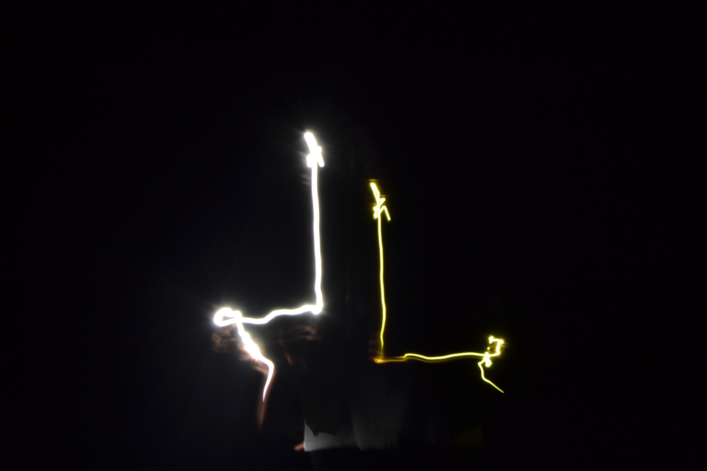
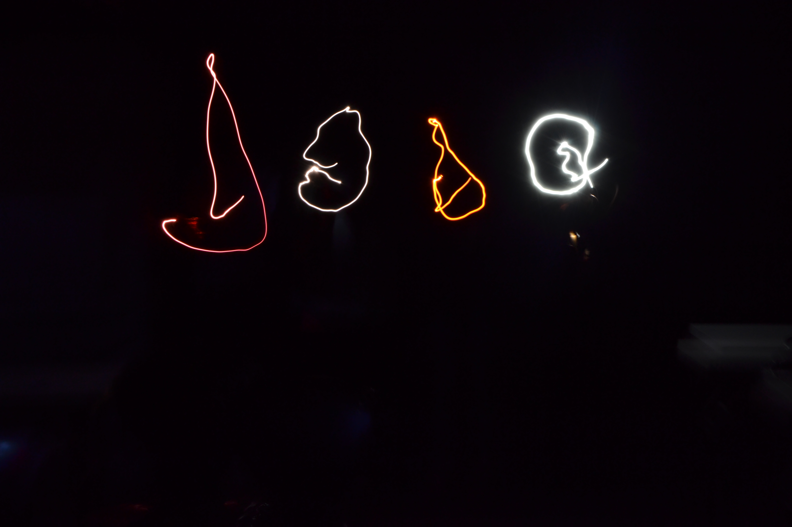
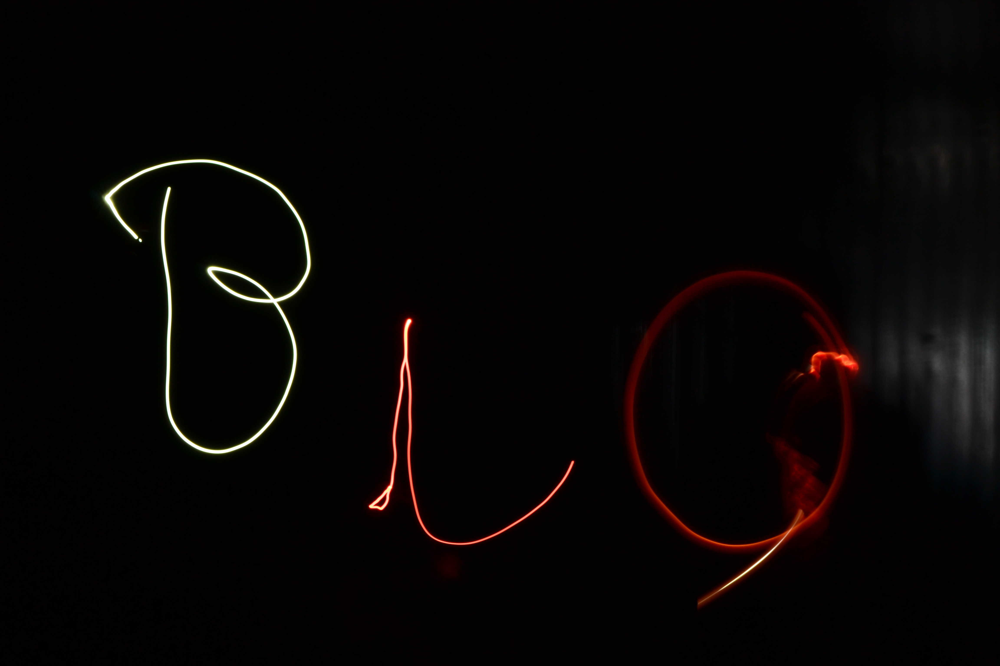

Gallery of My Work




Welcome to my personal website. I'm passionate about storytelling, both through words and visuals. I am a prospective media practitioner at Limkokwing University of Creative Technology Lesotho.
I was born and bred in Lesotho, Maseru and I attended my primary level at Mabote Primary School, then proceeded to Khubetsoana High School.
My journey into the world of media began at an early age, driven by curiosity and the desire to give a voice to untold stories.
Over the years, I’ve worked across various platforms—print, radio, and television—covering both local and global stories, often through volunteering. I aim to inform, inspire, and spark meaningful conversations.
I enjoy networking and learning from people across all walks of life, enriching my storytelling through diverse perspectives.
In my spare time, I travel, take photos, and write. I'm currently working on a radio drama project designed to raise awareness on social issues.
I enjoy photography, hiking, writing short stories, and exploring different cultures.
Cooking is also a creative outlet for me—every dish is a story, a blend of tradition and innovation that connects people through taste and experience.
Each ingredient tells a story, every recipe reflects culture, and each bite offers an opportunity to explore and share creativity.
I’m a prospective journalist and broadcaster with experience in covering local and international news, conducting interviews, and producing radio shows.
I’m passionate about radio drama—where sound alone evokes emotion and creates vivid stories in the listener's imagination.
I believe in the power of audio storytelling to provoke thought, inspire, and connect with people in unique and intimate ways.
Photography
Web Technology
Desktop Publishing
Online Journalism



WhatsApp #: +26657339644
Email: ngoanalitlala@gmail.com
Facebook: MaQueen Leche